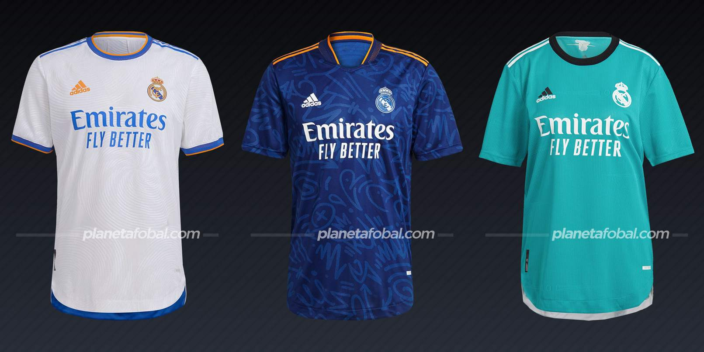
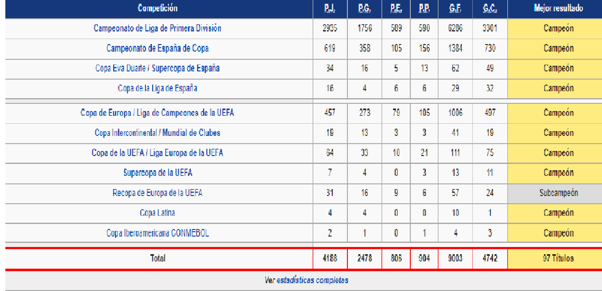

Real Madrid
El Real Madrid Club de Fútbol, más conocido simplemente como Real Madrid, es una entidad polideportiva con sede en Madrid, España. Fue declarada oficialmente registrada como club de fútbol por sus socios el 6 de marzo de 1902 con el objeto de la práctica y desarrollo de este deporte si bien sus orígenes datan al año 1900, y su denominación de (Sociedad) Madrid Foot-ball Club a noviembre de 1901 siendo el quinto club fundado en la capital. Tuvo a Julián Palacios y los hermanos Juan Padrós y Carlos Padrós como principales valedores de su creación. Identificado por su color blanco —del que recibe el apelativo de «blancos» o «merengues», es uno de los cuatro clubes profesionales de fútbol del país cuya entidad jurídica no es la de sociedad anónima deportiva (S. A. D.), ya que su propiedad recae en sus más de 90 000 socios. Otra salvedad comparte con el Athletic Club y el Fútbol Club Barcelona al participar sin interrupción en la máxima categoría de la Liga Nacional de Fútbol Profesional, la Primera División de España, desde su establecimiento en 1929. En ella posee los honores de haber sido el primer líder histórico de la competición,el de club con más títulos, y el de la máxima puntuación en una sola edición.
Uniformes 2022
En el plano deportivo el equipo madrileño mantiene una rivalidad con varios clubes. En España se da con el Athletic Club, con quien mantuvo intensos duelos en los primeros años del fútbol español por ser en aquel entonces dos de los mejores equipos que existían y con quien disputó varias finales de Copa; con el Fútbol Club Barcelona, rivalidad con trascendencia a nivel mundial en los partidos conocidos como «el clásico»
El club es uno de los únicos tres que ha disputado siempre la Primera División máxima competición de clubes en España desde su fundación en la temporada 1928-29 sumando un total de noventa y una apariciones. Ocupa el primer puesto en la clasificación entre los sesenta y tres participantes históricos además de ser el más laureado con treinta y cinco títulos. Su peor actuación se registró en la temporada 1947-48 cuando finalizó en undécimo puesto. En cuanto al panorama internacional, el club fue uno de los clubes que participaron en la primera edición de la Copa de Europa actual Liga de Campeones (en. Champions League) y más prestigiosa competición de clubes en Europa, habiéndola disputado desde entonces un total de cincuenta y dos temporadas con ausencia en quince ediciones; es, por tanto, el club con más presencias. En ellas sumó un total de trece títulos que le sitúan como el mejor equipo de la competición entre sus 530 participantes históricos. En el resto de competiciones oficiales nacionales suma un total de ciento treinta y dos apariciones destacando ciento nueve presencias en la Copa del Rey, segunda competición por importancia en España, sobre ciento dieciocho posibles para treinta y cinco ausencias en alguna de ellas;y treinta y dos apariciones en el resto de competiciones oficiales internacionales para dos ausencias en temporada de competiciones UEFA.Entre ellas destacan nueve en la Copa UEFA / Liga Europa y cuatro en la extinta Recopa de Europa.
